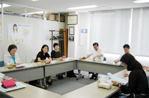

【日 時】
９月７日(月)10時30分～12時30分
【場 所】
埼玉県生協連・会議室
【出席者】
７人(埼玉消団連、県婦連、母親連絡会、埼玉県生協連、生協ネットワーク協議会、さいたま市消団連、事務局)
■
議 題
１．
学習懇談会
「埼玉県における農業政策」について
講師：埼玉県農林部農政課より
＜要旨＞平成21年度の主な施策について

食料供給力の強化・農業経営の安定では遊休農地の活用や地産地消と販路拡大をしています。
新規就農者の育成は、平成20年度は242人(40歳以上80人、40歳未満162人)、そのうち農業以外からの就農者は54人。全国的には新規就農者は減少していますが埼玉県は増加。
認定農業者等に対しての経営改善指導は、企業的農業経営体の育成をしています。
遊休農地を活用した農地の団地化と企業等の農業参入の促進。
農地法改正の概要は、農地面積の減少を抑制し農地と農地利用者の確保・拡大が目的。
食料自給率の向上は、県民への食料の安定供給につながります。
＜質疑応答＞
○
これまでは大規模な農家や集落営農に対し補助金が出されていたと思いますが、今後はこれまでまとめられなかった小規模農家も個別に補償されるのですか？
→
これまでの水田経営安定化対策等は今後なくなります。これに代わって戸別補償が行われますが、中心的な農家の育成も必要ですので大規模な中心的農家に補償を厚くするようになっています。
○
埼玉県の耕作放棄地は減少しているのですか？
→
見た目では分かりにくいのですが着実に減少しています。
２．
平成20年度食品衛生監視指導結果のまとめについて
３．
平成22年度食品衛生監視指導計画に対する要望案について
埼玉県消費者団体連絡会トップ